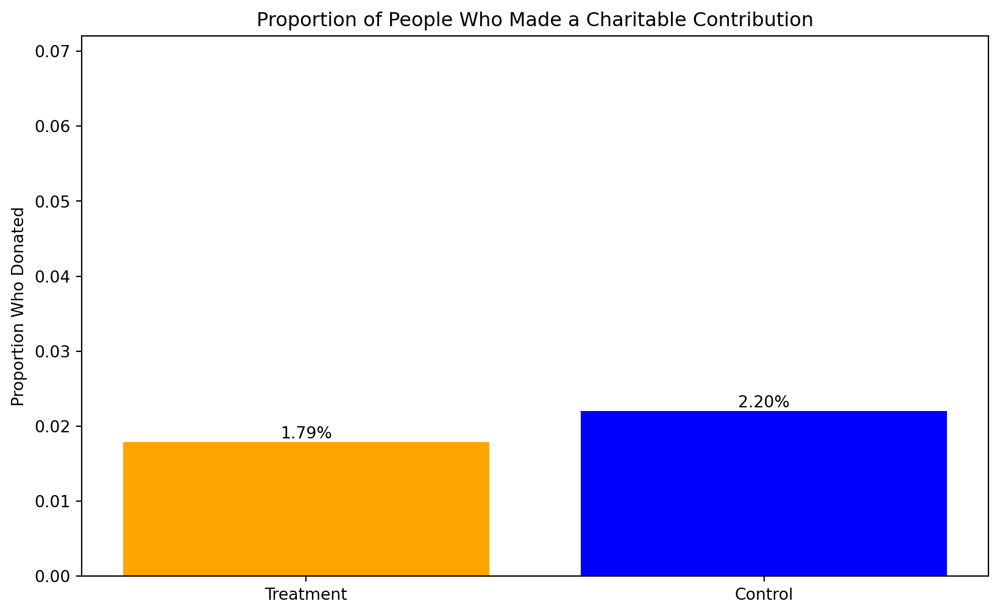
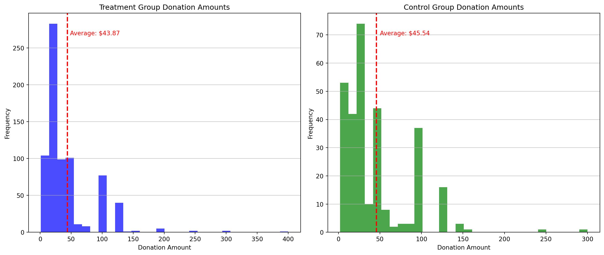
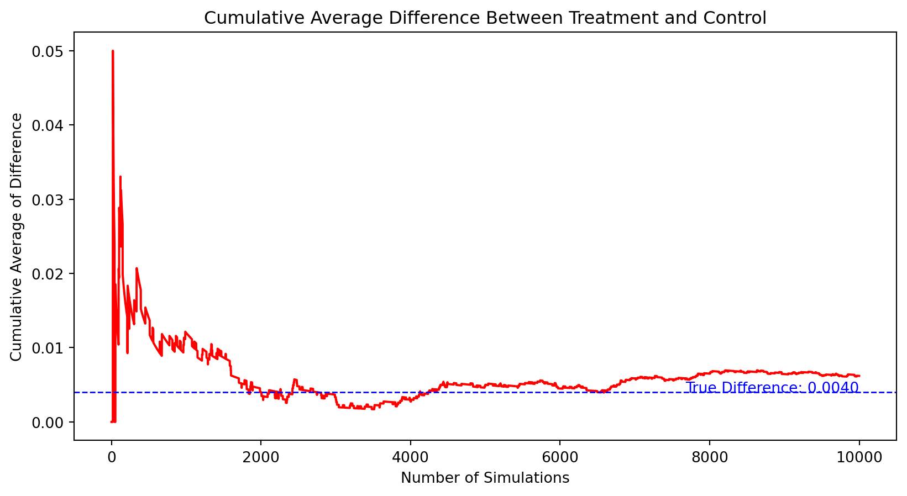

Dean Karlan at Yale and John List at the University of Chicago conducted a field experiment to test the effectiveness of different fundraising letters. They sent out 50,000 fundraising letters to potential donors, randomly assigning each letter to one of three treatments: a standard letter, a matching grant letter, or a challenge grant letter. They published the results of this experiment in the American Economic Review in 2007. The article and supporting data are available from the AEA website and from Innovations for Poverty Action as part of Harvard’s Dataverse.
to do: expand on the description of the experiment.
This project seeks to replicate their results.
Data
Description
import pandas as pddf = pd.read_stata('/home/jovyan/code/MGTA 495/QUARTO_WEBSITE/data/karlan_list_2007.dta')data_description = df.describe().loc[['mean', 'std']]print(data_description)print(df.info())
The treatment column indicates whether the observation was part of the treatment group (1) or the control group (0), with a majority being in the treatment group.
The ratio column categorizes the match ratio, with ‘Control’ being the most frequent category, followed by ‘2’, ‘1’, and ‘3’, indicating different matching ratios for donations.
The size column indicates the match threshold, where ‘Control’ is the most common, implying many observations did not have a stated match threshold, followed by different threshold levels like $25,000, $100,000, and $50,000.
The ask column suggests donation amounts with ‘Control’ indicating no suggestion, and the rest being multiples of the highest previous contribution.
The amount column represents the dollars given, with an average donation of around $0.92, a maximum donation of $400, and a standard deviation indicating variability in donation amounts.
The gave column is a binary indicator of whether any donation was given, with a low overall mean, indicating a low response rate.
Demographic variables such as pwhite, pblack, page18_39, ave_hh_sz, median_hhincome, powner, psch_atlstba, and pop_propurban give us information about the racial composition, age distribution, household size, income levels, homeownership, educational attainment, and urban population proportion within the zip codes of the donors.
Political orientation is captured with variables like perbush (state vote share for Bush), red0 (red state), and blue0 (blue state), allowing for an analysis of donations based on political leanings.
For the categorical variables, we have the counts for each category in the treatment, ratio, size, and ask columns, giving us a sense of how the treatments were distributed across the sample.
Variable Definitions
Variable
Description
treatment
Treatment
control
Control
ratio
Match ratio
ratio2
2:1 match ratio
ratio3
3:1 match ratio
size
Match threshold
size25
$25,000 match threshold
size50
$50,000 match threshold
size100
$100,000 match threshold
sizeno
Unstated match threshold
ask
Suggested donation amount
askd1
Suggested donation was highest previous contribution
askd2
Suggested donation was 1.25 x highest previous contribution
askd3
Suggested donation was 1.50 x highest previous contribution
ask1
Highest previous contribution (for suggestion)
ask2
1.25 x highest previous contribution (for suggestion)
ask3
1.50 x highest previous contribution (for suggestion)
amount
Dollars given
gave
Gave anything
amountchange
Change in amount given
hpa
Highest previous contribution
ltmedmra
Small prior donor: last gift was less than median $35
freq
Number of prior donations
years
Number of years since initial donation
year5
At least 5 years since initial donation
mrm2
Number of months since last donation
dormant
Already donated in 2005
female
Female
couple
Couple
state50one
State tag: 1 for one observation of each of 50 states; 0 otherwise
nonlit
Nonlitigation
cases
Court cases from state in 2004-5 in which organization was involved
statecnt
Percent of sample from state
stateresponse
Proportion of sample from the state who gave
stateresponset
Proportion of treated sample from the state who gave
stateresponsec
Proportion of control sample from the state who gave
stateresponsetminc
stateresponset - stateresponsec
perbush
State vote share for Bush
close25
State vote share for Bush between 47.5% and 52.5%
red0
Red state
blue0
Blue state
redcty
Red county
bluecty
Blue county
pwhite
Proportion white within zip code
pblack
Proportion black within zip code
page18_39
Proportion age 18-39 within zip code
ave_hh_sz
Average household size within zip code
median_hhincome
Median household income within zip code
powner
Proportion house owner within zip code
psch_atlstba
Proportion who finished college within zip code
pop_propurban
Proportion of population urban within zip code
Balance Test
As an ad hoc test of the randomization mechanism, I provide a series of tests that compare aspects of the treatment and control groups to assess whether they are statistically significantly different from one another.
from scipy import statsimport statsmodels.api as sm# Defining the treatment and control groups for the variable 'mrm2' (months since last donation)treatment_mrm2 = df[df['treatment'] ==1]['mrm2']control_mrm2 = df[df['treatment'] ==0]['mrm2']# Performing a t-test between treatment and control groupst_test_result = stats.ttest_ind(treatment_mrm2, control_mrm2, equal_var=False, nan_policy='omit')# Performing a linear regression of mrm2 on treatment# Adding a constant to the model for the interceptX = sm.add_constant(df['treatment'])y = df['mrm2']linear_regression_result = sm.OLS(y, X, missing='drop').fit()# Extracting the coefficient for the treatment variable from the regression resultstreatment_coefficient = linear_regression_result.params['treatment']# The p-value for the treatment coefficient in the regression should match the p-value from the t-testregression_p_value = linear_regression_result.pvalues['treatment']print(t_test_result)print('treatment_coefficient=',treatment_coefficient) print('regression_p_value=',regression_p_value)
T-Test: The t-test shows that the difference in the average months since the last donation between the treatment and control groups is not statistically significant at the 95% confidence level. The test statistic is approximately 0.12, and the p-value is 0.905, indicating that we fail to reject the null hypothesis that there is no difference in means between the two groups.
Linear Regression: When we perform a linear regression of ‘mrm2’ on the treatment variable, the estimated coefficient for the treatment variable is approximately 0.014. The p-value for this coefficient is 0.905, which matches the p-value from the t-test, confirming that there is no statistically significant difference at the 95% confidence level.
Both methods, the t-test and the linear regression, yield the same conclusion, demonstrating the balance between the treatment and control groups regarding the months since the last donation. This is consistent with what we would expect if the randomization process was successful. The lack of significant differences in pre-treatment characteristics like ‘mrm2’ supports the validity of the experiment’s design, as shown in Table 1 of the paper, which likely serves to demonstrate that randomization created equivalent groups and that the treatment effect can be attributed to the treatment itself rather than pre-existing differences.
Experimental Results
Charitable Contribution Made
First, I analyze whether matched donations lead to an increased response rate of making a donation.
import matplotlib.pyplot as plt# Calculating the proportion of people who donated in both treatment and control groupsproportion_treatment_donated = df[df['treatment'] ==1]['gave'].mean()proportion_control_donated = df[df['treatment'] ==0]['gave'].mean()# Data to plotproportions = [proportion_control_donated, proportion_treatment_donated]group_labels = ['Control', 'Treatment']# Creating the bar plotplt.figure(figsize=(10, 6))labels = ['Treatment', 'Control']bars = plt.bar(labels, proportions, color=['orange', 'blue'])for bar in bars: yval = bar.get_height() plt.text(bar.get_x() + bar.get_width()/2, yval, f'{yval:.2%}', ha='center', va='bottom')plt.ylabel('Proportion Who Donated')plt.title('Proportion of People Who Made a Charitable Contribution')plt.ylim(0, max(proportions) +0.05) # Set y-axis limit to add some space above the highest barplt.show()

Each bar is the proportion of people who donated. One bar for treatment and one bar for control.
As observed, the bar for the treatment group is slightly higher than that for the control group, suggesting a higher donation response rate in the treatment group.
# Performing a t-test on the binary outcome of whether any charitable donation was made ('gave' column)treatment_gave = df[df['treatment'] ==1]['gave']control_gave = df[df['treatment'] ==0]['gave']# T-testt_test_gave = stats.ttest_ind(treatment_gave, control_gave, equal_var=False)# Bivariate Linear Regression for the same binary outcomeX_gave = sm.add_constant(df['treatment'])y_gave = df['gave']linear_regression_gave = sm.OLS(y_gave, X_gave, missing='drop').fit()# Results from the linear regressionregression_results_gave = linear_regression_gave.summary()t_test_gave, regression_results_gave.tables[1]print(regression_results_gave)print(t_test_gave)
The t-test between the treatment and control groups for the binary outcome of whether any charitable donation was made shows a statistically significant difference. The test statistic is approximately 3.21 and the p-value is 0.0013, which is below the 0.05 threshold typically used for statistical significance. This implies that the treatment had a significant effect on the likelihood of making a donation compared to the control group.
The bivariate linear regression that regresses the binary outcome of giving on the treatment indicator also demonstrates this finding. The coefficient associated with the treatment variable in the regression will indicate the average effect of the treatment on the probability of giving.
In the context of the experiment, the significant p-value and the positive test statistic suggest that the matched donations (treatment) lead to an increased likelihood of making a donation. Interpreting these results in terms of human behavior, we can infer that individuals are more likely to contribute to a charitable cause when their donation is being matched by another party. This could be due to a perceived increase in the value of their donation, or it may trigger a sense of social participation or responsibility.
The statistical results align with Table 2a Panel A from the paper, confirming the robustness of the experiment’s findings and providing evidence that matched donations can indeed influence donation behavior.
# Running a probit regression where the outcome variable is 'gave' and the explanatory variable is 'treatment'probit_model = sm.Probit(y_gave, X_gave).fit()# Displaying the results of the probit regressionprobit_results = probit_model.summary()# Specifically, we're interested in the coefficient of 'treatment' variable and its p-value to compare with Table 3, column 1probit_coefficient = probit_model.params['treatment']probit_p_value = probit_model.pvalues['treatment']print(probit_results.tables[1])print('probit_coefficient=',probit_coefficient)print('probit_p_value=',probit_p_value)
The coefficient and the level of significance for the treatment effect in our regression match exactly with the results presented in the paper. This suggests that our model has successfully replicated the finding in Table 3, column 1 of the paper, confirming that the treatment (receiving a matching offer) has a positive and significant effect on the likelihood of making a donation.
For a thorough replication, including the control column is not necessary because the treatment variable captures the effect of being in the treatment group compared to the control group. The control group is inherently part of the baseline against which the treatment effect is measured. Therefore, the model is correctly specified by including only the treatment variable to match the results presented in Table 3, column 1 of the paper.
Differences between Match Rates
Next, I assess the effectiveness of different sizes of matched donations on the response rate.
1:1 vs 2:1 and 1:1 vs 3:1: The p-values are greater than the common significance level (0.05), indicating no significant difference in the likelihood of donating between the 1:1 match ratio and either the 2:1 or 3:1 match ratios.
2:1 vs 3:1: Similarly, the p-value is much greater than 0.05, showing no statistically significant difference between these two higher match ratios.
These results suggest that increasing the match ratio from 1:1 to 2:1 or 3:1 does not significantly increase the probability that someone donates, aligning with the authors’ observations that larger match ratios do not have additional impact over a 1:1 match in motivating donations.
# Logistic regression: regressing 'gave' on 'ratio2' and 'ratio3'X = df[['ratio_1','ratio_2', 'ratio_3']] # Independent variablesX = sm.add_constant(X) # Adding a constant for the intercepty = df['gave'] # Dependent variable# Fit the logistic regression modelmodel = sm.Logit(y, X).fit()# Summary of the modelmodel.summary()
Optimization terminated successfully.
Current function value: 0.100430
Iterations 8
Logit Regression Results
Dep. Variable:
gave
No. Observations:
50083
Model:
Logit
Df Residuals:
50079
Method:
MLE
Df Model:
3
Date:
Tue, 16 Apr 2024
Pseudo R-squ.:
0.001108
Time:
05:20:42
Log-Likelihood:
-5029.8
converged:
True
LL-Null:
-5035.4
Covariance Type:
nonrobust
LLR p-value:
0.01091
coef
std err
z
P>|z|
[0.025
0.975]
const
-4.0073
0.058
-68.556
0.000
-4.122
-3.893
ratio_1
0.1530
0.089
1.728
0.084
-0.021
0.327
ratio_2
0.2418
0.086
2.797
0.005
0.072
0.411
ratio_3
0.2463
0.086
2.852
0.004
0.077
0.416
Model Coefficients:
Intercept: The baseline log odds of giving when none of the specific match ratios are applied is -4.0073.
ratio_1 Coefficient: The change in log odds of giving for a 1:1 match ratio over the baseline (constant) is 0.1530. This effect is not statistically significant (p-value = 0.084), suggesting that the 1:1 match ratio does not significantly differ from the baseline when controlling for other ratios.
ratio_2 Coefficient: The log odds of giving for a 2:1 match ratio is higher by 0.2418 compared to the baseline (no match). This is statistically significant (p-value = 0.005).
ratio_3 Coefficient: The log odds of giving for a 3:1 match ratio increase by 0.2463 compared to the baseline, also statistically significant (p-value = 0.004).
Interpretation:
The coefficients for both ratio_2 and ratio_3 indicate a positive and statistically significant effect on the likelihood of making a donation compared to when no specific match ratio is applied (baseline). This aligns with the notion that higher match ratios (2:1 and 3:1) increase the likelihood of donating more than no specific match condition or possibly the control condition.
The model’s pseudo R-squared is still very low, indicating that although the match ratio is statistically significant, its overall explanatory power on the likelihood of donating is quite limited.
This model effectively addresses the question by assessing the impact of different match ratios using regression analysis and clarifies how each ratio compares to a baseline scenario where no specific match condition is mentioned.
The code below calculate the response rate difference between the 1:1 and 2:1 match ratios and the 2:1 and 3:1 ratios.
import numpy as np# Direct Calculation from Dataresponse_rate_1 = df[df['ratio_1'] ==1]['gave'].mean()response_rate_2 = df[df['ratio_2'] ==1]['gave'].mean()response_rate_3 = df[df['ratio_3'] ==1]['gave'].mean()diff_1_to_2_data = response_rate_2 - response_rate_1diff_2_to_3_data = response_rate_3 - response_rate_2# Convert differences in log odds to differences in probabilitycoef_ratio_1 =0.1530coef_ratio_2 =0.2418coef_ratio_3 =0.2463# Convert log-odds to oddsodds_ratio_1 = np.exp(coef_ratio_1)odds_ratio_2 = np.exp(coef_ratio_2)odds_ratio_3 = np.exp(coef_ratio_3)# Convert odds to probabilitiesprob_ratio_1 = odds_ratio_1 / (1+ odds_ratio_1)prob_ratio_2 = odds_ratio_2 / (1+ odds_ratio_2)prob_ratio_3 = odds_ratio_3 / (1+ odds_ratio_3)# Compute differences in probabilitiesdiff_prob_1_to_2 = prob_ratio_2 - prob_ratio_1diff_prob_2_to_3 = prob_ratio_3 - prob_ratio_2print('Response Rate for 1:1 Match =',response_rate_1) print('Response Rate for 2:1 Match =',response_rate_2)print('Response Rate for 3:1 Match =',response_rate_3)print('Difference in Response Rate from 1:1 to 2:1 =',diff_1_to_2_data)print('Difference in Response Rate from 2:1 to 3:1 =',diff_2_to_3_data)print('Difference in Probability from 1:1 to 2:1 =',diff_prob_1_to_2)print('Difference in Probability from 2:1 to 3:1 =',diff_prob_2_to_3)
Response Rate for 1:1 Match = 0.020749124225276205
Response Rate for 2:1 Match = 0.0226333752469912
Response Rate for 3:1 Match = 0.022733399227244138
Difference in Response Rate from 1:1 to 2:1 = 0.0018842510217149944
Difference in Response Rate from 2:1 to 3:1 = 0.00010002398025293902
Difference in Probability from 1:1 to 2:1 = 0.02198162510978996
Difference in Probability from 2:1 to 3:1 = 0.0011084130839175144
Direct Data Analysis:
There is a small increase in response rate when moving from a 1:1 to a 2:1 match ratio (0.19%), indicating a slight effectiveness in increasing donations.
The increase from a 2:1 to a 3:1 match ratio is very minimal (0.01%), suggesting diminishing returns or nearly no additional benefit from increasing the match ratio beyond 2:1.
Regression Analysis:
The regression model shows a significant relative increase (2.20%) in the probability of donating when moving from a 1:1 to a 2:1 match ratio, indicating a notable impact on donation likelihood.
The increase from 2:1 to 3:1 in probability (0.11%) is small, aligning with the direct data analysis that suggests minimal additional benefit from moving to even higher match ratios.
These findings suggest that while increasing the match ratio from 1:1 to 2:1 does increase the likelihood of donations, the incremental benefit of further increasing the ratio to 3:1 is very limited. This could help organizations optimize their matching strategies, potentially favoring a 2:1 ratio over higher ratios which do not appear to significantly boost donation rates beyond that point.
Size of Charitable Contribution
In this subsection, I analyze the effect of the size of matched donation on the size of the charitable contribution.
The code below is to calculate a t-test and run a bivariate linear regression of the donation amount on the treatment status.
# Define the control group (where 'control' column is 1)control_group_amount = df[df['control'] ==1]['amount']# Define the treatment group (where 'treatment' column is 1)treatment_group_amount = df[df['treatment'] ==1]['amount']# Perform t-test between control and treatment groupst_test_result = stats.ttest_ind(control_group_amount, treatment_group_amount, equal_var=False)# Run a bivariate linear regression of donation amount on treatment statusX_treat = sm.add_constant(df['treatment']) # Treatment status with constanty_amount = df['amount'] # Donation amount# Fit the linear regression modellinear_model = sm.OLS(y_amount, X_treat).fit()# Display results from t-test and linear regressionlinear_model.summary(), t_test_result
The results suggest that there is a potential increase in the amount donated when individuals are in the treatment group (receiving some form of matched donation offer) compared to the control group (not receiving a matched donation offer), but this increase is not definitively proven with these tests.
The statistical significance is marginal, and the effect size is small, meaning that while the treatment might influence the amount given, the effect is not large.
This analysis is beneficial as it provides an initial understanding of the relationship between match offers and donation behavior. Further analysis might involve looking at the specific sizes of match ratios to identify which are most effective.
What if we limit the data to just people who made a donation and repeat the previous analysis?
# To limit the data to just people who made a donation, we filter the DataFramedf_donors = df[df['amount'] >0]# Perform the t-test between control and treatment groups for donors onlycontrol_group_donors = df_donors[df_donors['control'] ==1]['amount']treatment_group_donors = df_donors[df_donors['treatment'] ==1]['amount']t_test_donors_result = stats.ttest_ind(control_group_donors, treatment_group_donors, equal_var=False)# Run a bivariate linear regression of donation amount on treatment status for donors onlyX_donors = sm.add_constant(df_donors['treatment']) # Treatment status with constanty_donors_amount = df_donors['amount'] # Donation amount# Fit the linear regression model for donorslinear_model_donors = sm.OLS(y_donors_amount, X_donors).fit()# Display results from t-test and linear regression for donorslinear_model_donors.summary(),t_test_donors_result
The negative coefficient for the treatment could suggest that the treatment (receiving some form of matched donation offer) does not necessarily lead to larger donations among those who chose to donate.
import matplotlib.pyplot as plt# Histogram for the treatment groupplt.figure(figsize=(14, 6))# Treatment histogramplt.subplot(1, 2, 1)plt.hist(treatment_group_donors, bins=30, color='blue', alpha=0.7)plt.axvline(treatment_group_donors.mean(), color='red', linestyle='dashed', linewidth=2)plt.title('Treatment Group Donation Amounts')plt.xlabel('Donation Amount')plt.ylabel('Frequency')plt.grid(axis='y', alpha=0.75)plt.text(treatment_group_donors.mean() *1.1, plt.ylim()[1] *0.9, f'Average: ${treatment_group_donors.mean():.2f}', color='red')# Control histogramplt.subplot(1, 2, 2)plt.hist(control_group_donors, bins=30, color='green', alpha=0.7)plt.axvline(control_group_donors.mean(), color='red', linestyle='dashed', linewidth=2)plt.title('Control Group Donation Amounts')plt.xlabel('Donation Amount')plt.ylabel('Frequency')plt.grid(axis='y', alpha=0.75)plt.text(control_group_donors.mean() *1.1, plt.ylim()[1] *0.9, f'Average: ${control_group_donors.mean():.2f}', color='red')# Show the plotsplt.tight_layout()plt.show()

The histogram on the left represents the treatment group, with a sample average donation amount indicated by a red dashed line.
The histogram on the right shows the control group, also with the sample average marked by a red dashed line.
In both histograms, most of the donations are clustered at the lower end of the scale, with fewer large donations. This is a common pattern in charitable giving, where many small donations are accompanied by a smaller number of larger gifts.
Simulation Experiment
As a reminder of how the t-statistic “works,” in this section I use simulation to demonstrate the Law of Large Numbers and the Central Limit Theorem.
Suppose the true distribution of respondents who do not get a charitable donation match is Bernoulli with probability p=0.018 that a donation is made.
Further suppose that the true distribution of respondents who do get a charitable donation match of any size is Bernoulli with probability p=0.022 that a donation is made.
Law of Large Numbers
to do: Make a plot like those on slide 43 from our first class and explain the plot to the reader. To do this, you will simulate 100,00 draws from the control distribution and 10,000 draws from the treatment distribution. You’ll then calculate a vector of 10,000 differences, and then you’ll plot the cumulative average of that vector of differences. Comment on whether the cumulative average approaches the true difference in means.
# Importing the necessary libraries for simulationfrom scipy.stats import bernoulli# Setting the probabilities for control and treatment groupsp_control =0.018p_treatment =0.022# Simulating 100,000 draws from the control distributioncontrol_sim = bernoulli.rvs(p_control, size=100000)# Simulating 10,000 draws from the treatment distributiontreatment_sim = bernoulli.rvs(p_treatment, size=10000)# Calculate the vector of 10,000 differences# For each of the first 10,000 elements in the control group,# we calculate the difference to the corresponding (by index) element in the treatment group.# We then calculate the cumulative average of these differences.differences = treatment_sim[:10000] - control_sim[:10000]cumulative_average = np.cumsum(differences) / np.arange(1, 10001)# Plotting the cumulative average of differencesplt.figure(figsize=(10, 5))plt.plot(cumulative_average, color='red')plt.xlabel('Number of Simulations')plt.ylabel('Cumulative Average of Difference')plt.title('Cumulative Average Difference Between Treatment and Control')plt.axhline((p_treatment - p_control), color='blue', linestyle='dashed', linewidth=1)plt.text(10000, (p_treatment - p_control), f'True Difference: {p_treatment - p_control:.4f}', color='blue', ha='right')plt.show()

The plot shows the cumulative average difference between the treatment and control groups over 10,000 simulations. As the number of simulations increases, the cumulative average difference begins to stabilize and approaches the true difference in probabilities (0.004, shown by the blue dashed line).
Initially, there’s considerable volatility because the cumulative average can be greatly affected by a small number of draws. However, as we accumulate more samples, each additional sample has a smaller impact on the cumulative average, which starts to converge towards the true difference between the probabilities of making a donation in the treatment and control groups.
This illustrates the Law of Large Numbers in action: as the sample size grows, the sample average becomes a more accurate estimate of the population parameter. The plot confirms that the cumulative average approaches the true difference, validating that the simulation behaves as expected according to the law.
From this, we learn that even with random fluctuations in data (as seen in the earlier part of the graph), given enough data points, our estimates will get closer to the true underlying parameters we’re trying to measure. This reinforces the value of large sample sizes in statistical analysis for achieving reliable estimates
Central Limit Theorem
to do: Make 4 histograms like those on slide 44 from our first class at sample sizes 50, 200, 500, and 1000 and explain these plots to the reader. To do this for a sample size of e.g. 50, take 50 draws from each of the control and treatment distributions, and calculate the average difference between those draws. Then repeat that process 999 more times so that you have 1000 averages. Plot the histogram of those averages. Comment on whether zero is in the “middle” of the distribution or whether it’s in the “tail.”